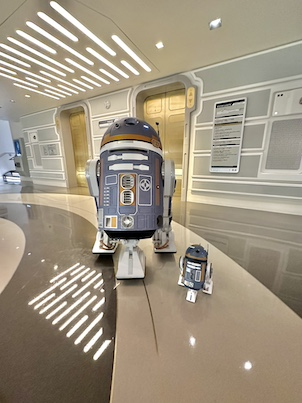

Kevin Meza
<br />
CSD340 - Module 10 Assignment
<br />
February 22, 2024

<!DOCTYPE HTML PUBLIC '-//W3C//DTD HTML 4.01 Transitional//EN'
  'http://www.w3.org/TR/1999/REC-html401-19991224/loose.dtd'>

<html xmlns='http://www.w3.org/1999/xhtml'>
  <head>
    <title>
      Example 10
    </title>
    <script>
      function displayImage(imageFile){
        var largerImage = document.getElementById("mainImage");
        var newNode = document.createElement("img");
        newNode.id = "mainImage";
        newNode.src = imageFile;
        newNode.alt = "Large Image";
        newNode.className = "mainImage";
        newNode.style.width = "300px";
        newNode.style.height = "200px";
        largerImage.parentNode.replaceChild(newNode, largerImage);
        
      }
    </script>

    <link rel='stylesheet' type='text/css' href='body1.css' />

  </head>

  <body>
    <br />
    <br />
    <div>
         <a href="javascript:void(0);" onclick="lily.src='lily2.jpg';" onmouseout="lily.src='lily1.jpg';">
 	 	
	 </a>
    </div>
    <br />
    <div
         onmouseover="this.style.color='red';"
         onmouseout= "this.style.color='black';">

      Click on the image to change.
      <br />
      <br />

    </div>
    <div>
      <a href="javascript:void(0);" onclick="sk.src='sk2.jpg';" onmouseout="sk.src='sk1.jpg';">
 	 	
      </a>
    </div>
    <br />
    <div
         onmouseover="this.style.color='red';"
         onmouseout= "this.style.color='black';">

      Click on the image to change.
      <br />
      Right-click and select View Source for more details.

    </div>

  </body>

</html>